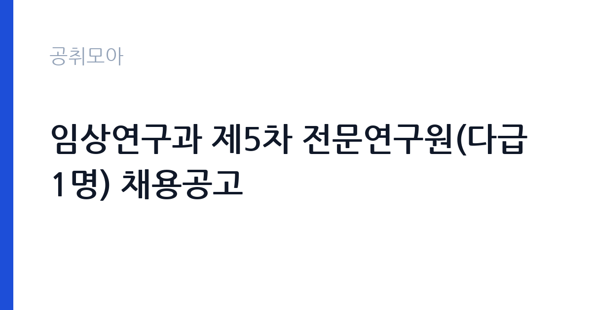

[국가기관] 임상연구과 제5차 전문연구원(다급 1명) 채용공고
식품의약품안전처 식품의약품안전평가원 · 충북 · 마감 2026-10-25 (D-8) · 출처 나라일터

한눈에 보는 모집 조건
| 기관 | 식품의약품안전처 식품의약품안전평가원 |
|---|---|
| 공고명 | 임상연구과 제5차 전문연구원(다급 1명) 채용공고 |
| 고용형태 | 정규직 |
| 근무지 | 충북 |
| 게시일 | 2026-10-17 |
| 마감일 | 2026-10-25 (D-8) |
지원자격, 이렇게 읽으세요
- 전문연구원(다급) 1명
- 접수 ~2026-10-25 마감
- 세부 조건은 원문 공고문 확인
전문연구원 다급은 관련 분야 학위와 실무경력을 함께 보는 직위입니다. 공고문은 우대사항으로 약동약력학 모델링·시뮬레이션 경험과 NONMEM, R 등 프로그램 사용 경험을 적고 있습니다. 즉 임상시험 데이터를 직접 다뤄본 경험이 사실상의 차별 요소입니다. 공무직근로자이므로 국가공무원법상 결격사유가 없어야 하고, 병역 관련 요건과 최종학위 증명서 제출 방식을 공고문에서 확인해야 합니다.
이 공고의 포인트
이 자리의 핵심은 규제기관 안에서 임상 데이터를 다룬다는 점입니다. 제약사나 임상시험수탁기관(CRO)에서 쌓은 계량약리 경험을 규제 심사 관점으로 확장할 수 있고, 식약처의 자체 연구개발사업 과제에 참여해 결과물이 정보집·사례집 형태로 남습니다. 같은 과에서 직전 차수 공고를 낼 만큼 반복 채용이 이뤄지는 자리라 업무 범위가 이미 정리되어 있습니다.
전형은 어떻게 진행되나
서류전형으로 직무 적합성을 보고, 면접전형에서 연구 수행 능력과 데이터 처리 역량을 확인하는 구조입니다. 같은 과의 직전 차수 공고에서는 서류 합격자에게 응시번호를 부여해 면접 일정을 공지했습니다. 연구 경력은 논문 목록만으로는 판단이 어려워, 어떤 데이터로 무엇을 검증했는지를 요약해 두는 것이 도움이 됩니다. 최종합격자 발표와 신원조사 절차는 평가원 채용 홈페이지에 별도 공고됩니다.
원문에서 확인한 전형 방식
식품의약품안전평가원 임상연구과에서 근무할 공무직근로자 채용을 붙임과 같이 공고합니다. 자세한 사항은 공고문을 참조하시기 바랍니다. ○ 채용인원: 전문연구원(다급) 1명 ○ 담당업무 자체연구개발사업(R&D) 등 연구사업 수행 및 부서운영 지원 업무 - 의약품 임상평가 기술 개발을 위한 의료빅데이터 활용 방안 연구 - 계량약리(약동-약력학 모델링 시뮬레이션, PBPK, QSP 등) 관련 연구 - 국내외 임상시험 관련 자료 조사분석 - 연구 사업 성과 활용(사례집 정보집, 자료집 발간 등) - 기타 연구과제 수행을 위한 자료 작성 및 행정업무 등 * 우대사항 - 약동약력학 모델링시뮬레이션 관련 경험자, NONMEM, R 등 관련 프로그램 사용경험자 우대 ○ 접수기간: 2026. 10. 17.(토) ~ 2026. 10. 25.(일)
이런 분께 추천해요
- 임상시험 데이터나 의료빅데이터를 다뤄본 연구 경력자
- NONMEM·R 등 분석 도구를 실무에서 사용해본 지원자
- 규제 과학 분야로 커리어를 옮기려는 제약·CRO 출신 연구자
지원 전 체크리스트
- 우대사항에 적힌 모델링 도구 사용 경험을 구체적 프로젝트 단위로 정리할 것
- 최종학위 증명서와 경력증명서 발급 가능 여부 사전 확인
- 채용 형태가 공무직근로자(기간제)이며 무기계약 전환 조건은 원문 확인 대상임을 인지
- 근무지가 오송으로 이동·거주 계획을 미리 점검
모집 일정과 제출 타이밍
접수는 2026년 10월 17일(토)부터 10월 25일(일)까지 이틀에 걸친 주말 구간을 포함합니다. 마감일이 일요일이므로 마지막 날 접수처 응답이 어려울 수 있어 평일 제출이 안전합니다. 서류 심사 결과와 면접 일정은 평가원 우수인재채용 홈페이지 공고로 안내되며, 최종합격자 발표도 같은 경로로 게시됩니다.
직무 이해하기: 국가기관
임상연구과의 업무는 크게 세 갈래입니다. 첫째, 자체 연구개발사업 과제 수행으로 의약품 임상평가에 의료빅데이터를 활용하는 방법을 설계합니다. 둘째, 계량약리 기법으로 용량-반응과 약물상호작용을 모델링해 심사에 필요한 근거를 만듭니다. 셋째, 국내외 임상시험 관련 자료를 조사·분석하고 결과를 정보집이나 자료집으로 발간합니다. 여기에 연구과제 행정, 부서 운영 지원 업무가 더해집니다. 심사 업무와 연구 업무가 맞물려 있어 문서화 능력이 중요합니다.
자기소개서 작성 팁
자기소개서에서는 사용한 데이터와 모델을 먼저 밝히고, 그 결과가 어떤 판단에 쓰였는지까지 연결해 쓰는 방식이 효과적입니다. 예를 들어 특정 약물의 집단약동학 모델을 구축해 용량 조정 근거를 제시한 경험이라면 데이터 규모, 사용 소프트웨어, 검증 방법을 함께 적으십시오. 규제기관 지원 동기는 '심사 관점에서 연구하고 싶다'는 방향으로 잡으면 직무와 자연스럽게 이어집니다. 확인하지 않은 수치는 쓰지 않는 편이 낫습니다.
면접 준비 포인트
면접은 연구 경험의 재현 가능성을 확인하는 질문이 중심이 됩니다. 왜 그 모델을 선택했는지, 대안은 무엇이었는지, 결과가 틀렸다면 어떻게 검증했을지를 차례로 물을 수 있습니다. R 코드나 데이터 전처리 과정을 말로 설명할 수 있어야 합니다. 아울러 공무직으로서 연구 윤리, 자료 보안, 보고서 기한 준수 태도를 함께 봅니다.
급여·근무조건 읽는 법
전문연구원 다급의 보수는 평가원 공무직 보수 기준표에 따라 책정되며, 공고문에 급여 항목이 표로 제시됩니다. 정확한 금액은 원문 보수표에서 확인하십시오. 같은 과의 직전 4차 공고에서는 다급에 대해 근무성적평가 후 재계약이 가능하고 2년 근무 후 무기계약직 전환 가능성이 있다고 안내했습니다. 이번 공고에 같은 조건이 붙었는지는 공고문 본문에서 확인해야 합니다. 수당·상여·복지 항목은 기관 규정에 따르며, 실수령액은 세금과 4대보험 공제 후 금액입니다.
자주 묻는 질문
- 공무직과 공무원은 어떻게 다른가요?
공무원은 국가공무원법에 따라 임용되는 신분이고, 공무직근로자는 기관과 근로계약을 맺는 근로자입니다. 이 공고는 공무직근로자 채용입니다. - 계량약리 경험이 없으면 지원할 수 없나요?
우대사항으로 적혀 있어 필수 요건은 아닐 수 있습니다. 다만 직무 특성상 관련 경험이 평가에 크게 작용하므로, 공고문의 필수 자격과 우대사항을 구분해 확인하십시오. - 근무지는 어디인가요?
충북 청주시 흥덕구 오송읍 오송보건의료행정타운 내 식품의약품안전평가원입니다.
함께 보면 좋은 공고
[국가기관] [국립군산대학교]국립대학육성사업 기간제 계약직원(연구원) 채용 재공고 — 마감 2026-10-26[국가기관] 2026년도 제1회 화성동탄우체국 공무직 우정실무원 채용시험 서류전형 결과 및 실기/면접시험 공고 — 마감 2026-10-20[국가기관] 2026년 제8회 화성동탄우체국 기간제 상시집배원 채용시험 재공고(봉담) — 마감 2026-10-23출처: 나라일터 공개정보를 바탕으로 공취모아가 정리한 안내글입니다. 모집 조건·일정은 변경될 수 있으니 지원 전 반드시 원문 공고문을 확인하세요. 본 글은 정보 제공용이며 합격을 보장하지 않습니다.